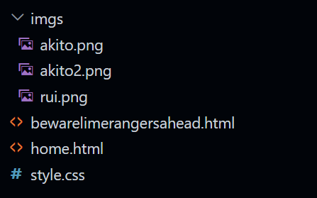

[SHIFT TO SCROLL HORIZONTALLY FOR MY PC BUDDIES, DESKTOP MODE RECOMMENDED FOR MY MOBILE HOMIES]
hosted frontend on github pages, backend powered by netlify, i have made this password locked website possible for very special people to access. isnt that so awesome. also every section is scrollable. this site is unfortunately semi-mobile friendly since you have to scroll just to get useless information about me.
though indispensable for YOU because now you can gaslight me or blackmail me or any manipulation technique to make me do something. dont actually do that pleas
anyways enough trivial info, this specific "home" page is the. wlel. welcome page. this is actually an iframe did you know that? for my non coder friends an iframe is an HTML element which lets you display content from another webpage to that iframe. the main html code is the "bewarelimerangersahead.html" file if you look at source. this is how my explorer looks like in visual studio code:

that was very useless yapping for an average person unless you wanna code too and make very cool websites like this one! i promise its very easy, you just need to apply logic. you usually dont need math for this kind of coding (frontend web development) but if you do, its just basic arithmetics (in which you can calculate automatically by using a calculator.) you can also make things incredibly immersive with JavaScript (the language i used for backend to secure the password!) oh and you need css as well to style the html pages. css is even more easier.
that was a long one. sorry i got distracted. anyways the "list" page is a list of people who have access to the password of this site. not really important to you as a viewer, but to me because i need to keep track of people lol "why do you need it anyway if you have so little trusted friends, lime??" i forget stuff easily, even something as unforgettable as my trusted friends i am sosososoosososo sorry.
okay. so the "entries" tab is. well. entries. like journal entries! in this page, you will see timely yapping sessions from me about how my day went. and a quote at the very start of it! its that simple.
however, dont confuse the "entries" page with the "daily log" located at the left of this text area! thats where i (try to) post short, consistent and daily updates of whats going on in my life or maybe the main focus of the day!
moving on, the "profile" tab is my profile, which contains basic information about me and my socials! pls follow/add me PSLSLSL /NFFNFDN HAHEHEHEH
I will not tell anyone how the password system works no matter who you are. the reason for that is i wanna act like a villain that has anti hero friends
anyway... uhh... that seems to be all for this page. thank you for uh reading this so called welcome page that is actually a piece of nonsense to the end. if youve reached this far, dm me anywhere and say "high pressure washing machine" >:)
i love akito he so cute awww